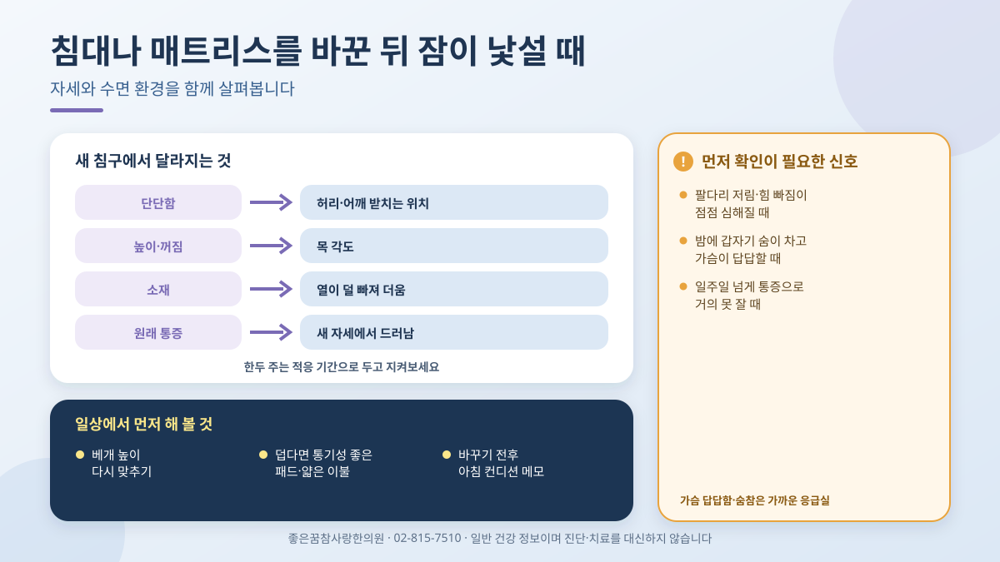

이종호 한의사 감수좋은꿈참사랑한의원 대표원장 (한의사 면허번호 19769)발행 2026-11-23 · 수정 2026-11-25
이 글의 차례
큰마음 먹고 침대를 바꾸면 바로 잘 잘 것 같지만, 처음 며칠은 뒤척임이 늘었다는 분이 있습니다. 몸이 눌리는 곳과 받쳐지는 곳이 달라지면서 편한 자세를 다시 찾는 시간이 필요하기 때문입니다. 대개 한두 주, 길게는 3~4주 안에 익숙해지는 경우가 많지만, 아침 통증이 점점 커지거나 팔다리 저림이 생기면 침구 탓으로만 넘기지 말고 원인을 함께 살펴봅니다.
왜 이런 불편이 생길 수 있나요
- 매트리스의 단단함이 바뀌면 허리와 어깨가 받쳐지는 위치가 달라집니다.
- 베개는 그대로인데 매트리스 높이나 꺼짐이 바뀌면 목 각도가 달라질 수 있습니다.
- 새 매트리스의 소재에 따라 열이 덜 빠져 덥게 느껴지기도 합니다.
- 바꾸기 전부터 있던 허리나 어깨 통증이 새 자세에서 드러나는 경우도 있습니다.
- 새 제품의 냄새나 뒤척일 때 나는 낯선 소리, 함께 자는 사람의 움직임이 전해지는 정도가 달라진 것도 얕은 잠을 깨우는 신호가 될 수 있습니다.
먼저 이렇게 여쭙니다
- 바꾼 지 며칠이 지났나요?
- 아침에 허리나 목, 어깨가 이전보다 더 불편한가요?
- 일어나서 움직이면 뻐근함이 몇 분 안에 풀리나요?
- 누웠을 때 눌리는 부위나 뜨거운 느낌이 있나요?
- 옆으로 자는 편인가요, 바로 누워 자는 편인가요?
- 베개 높이도 함께 바뀌었나요?
일상에서 먼저 해 볼 수 있는 것
- 한두 주는 적응 기간으로 두고 평소 자던 자세를 유지하기
- 베개 높이를 목이 편안하게 이어지는 정도로 다시 맞추기
- 몸이 눌리는 부위가 있다면 자세를 조금 바꿔 보기
- 덥게 느껴지면 통기성이 좋은 패드나 얇은 이불로 바꿔 보기
- 바꾸기 전과 후의 아침 컨디션을 간단히 적어 보기
- 베개·패드·자세는 한꺼번에 바꾸지 말고 사나흘 간격으로 하나씩 바꿔 무엇이 맞는지 가려 보기
- 바로 누워 잔다면 무릎 아래에, 옆으로 잔다면 무릎 사이에 얇은 쿠션이나 접은 이불을 받쳐 허리 부담 덜기
- 새 매트리스는 포장을 뜯은 뒤 하루 이틀 창문을 열어 냄새를 빼고 쓰기
- 어르신이라면 침대에 걸터앉았을 때 발바닥이 바닥에 편히 닿는 높이인지 확인하기
상황별 예시
- 예를 들어 하루 종일 앉아서 일하는 직장인이 단단한 매트리스로 바꾼 뒤 아침마다 허리가 뻣뻣하다면, 무릎 아래에 접은 이불을 받쳐 허리가 뜨지 않게 하고, 일어나기 전 누운 채 무릎을 가슴 쪽으로 천천히 당겨 몸을 푼 뒤 일어나 봅니다. 낮에도 한 시간에 한 번은 일어나 허리를 펴 주어야 침구만의 문제인지 가려 보기 쉽습니다.
- 예를 들어 옆으로 누워 자는 분이 푹신한 매트리스로 바꾼 뒤 아래쪽 어깨가 저려서 깬다면, 고개가 아래로 꺾이지 않도록 베개를 조금 높이고, 품에 쿠션을 안아 위쪽 팔과 어깨가 앞으로 쏠리지 않게 받쳐 봅니다. 저림이 낮에도 이어지거나 손에 힘이 빠진다면 자세를 바꾸기보다 확인이 먼저입니다.
- 예를 들어 잠드는 시각이 서로 다른 맞벌이 부부가 새 매트리스로 바꾼 뒤 상대가 뒤척일 때마다 깬다면, 이불을 각자 따로 덮어 움직임이 덜 전해지게 하고, 늦게 자는 사람은 침실 큰 조명 대신 발밑 불빛만 켜고 들어오도록 순서를 정해 둡니다. 그래도 자주 깨는 날이 이어지면 두 사람의 잠을 함께 적어 보세요.
스스로 점검해 보세요
- 바꾼 지 2주가 지났는데도 아침 허리·목 뻐근함이 그대로이거나 더 심해졌다.
- 일어나서 30분이 지나도 뻣뻣함이 잘 풀리지 않는다.
- 새 침구에서 밤에 깨는 횟수가 이전보다 늘었다.
- 한쪽 어깨나 팔, 엉덩이가 저려서 깨는 날이 있다.
- 땀이 차거나 더워서 이불을 걷어차는 날이 잦다.
- 베개를 이것저것 바꿔 봐도 목이 편한 높이를 찾지 못했다.
- 침구를 바꾸기 전부터 있던 허리나 목 통증이 요즘 더 자주 느껴진다.
한의원에서 함께 살필 수 있는 경우
- 새 침구에서 아침 허리와 목이 뻐근한 경우 자세와 움직임을 함께 살핍니다.
- 몸의 열감이나 땀 때문에 자주 깨는 경우 몸의 온기와 수면 환경을 함께 살핍니다.
- 침구를 바꾸기 전부터 통증이 있었던 경우 통증의 위치와 생활 습관을 함께 살핍니다.
좋은꿈참사랑한의원에서는 첫 방문 때 침구를 바꾼 시기와 불편한 부위, 주로 자는 자세, 아침 컨디션 기록을 먼저 듣습니다. 그다음 맥부터 짚어 보고, 필요하다고 판단될 때 혀와 배를 살펴 몸의 긴장과 소화 상태를 확인합니다. 더위나 추위 때문에 깨는지, 저녁 식사가 늦지 않은지, 요즘 마음 쓰이는 일이 있는지도 함께 여쭙습니다.
허리와 목은 직접 움직여 보며 어느 동작에서 불편한지 확인하고, 필요하면 초음파로 근육과 힘줄을 살피기도 합니다. 그 뒤 베개 높이와 자는 자세처럼 오늘 밤 바꿔 볼 것을 함께 정하고, 필요하면 침·추나·한약 상담을 이어 갑니다. 다음에 오시면 지난번 이야기를 이어서 여쭙고 아침 컨디션 기록을 함께 봅니다.
추나요법의 건강보험 적용 여부와 비용은 방문 전 전화(02-815-7510)로 확인해 주세요.
얼마나 지켜보고 언제 상담할까요
- 바꾼 뒤 첫 1~2주는 뒤척임이 늘 수 있습니다. 베개 높이와 자세를 하나씩 맞추며 아침 컨디션과 깬 횟수를 적어 봅니다.
- 2주가 지나도 아침 통증이 그대로이거나 점점 심해진다면, 또는 3~4주가 지나도 이전보다 자주 깬다면 상담을 받아 보세요.
- 팔다리가 저리거나 힘이 빠지는 느낌이 생기면 기간과 관계없이 먼저 확인합니다.
- 누워 쉬어도 가라앉지 않는 통증이 밤마다 이어지거나 열이 함께 난다면 기다리지 말고 의료기관을 찾으세요.
이렇게 기록해 오시면 상담이 쉬워집니다
- 침구를 바꾼 날짜와 아침 컨디션 변화
- 불편한 부위와 가장 심한 시간(새벽·기상 직후)
- 아침 뻣뻣함이 풀리기까지 걸린 시간
- 주로 자는 자세와 베개 높이
- 땀이나 더위로 깨는지
- 복용 중인 수면제나 진통제
이런 증상은 먼저 확인이 필요합니다
- 팔다리가 저리거나 힘이 빠지는 느낌이 새 침구 이후 점점 심해지는 경우
- 다리 힘이 빠지거나 대소변 조절이 어려운 경우
- 열이 나거나 이유 없이 체중이 줄면서 허리 통증이 함께 있는 경우
- 밤에 갑자기 숨이 차거나 가슴이 답답한 경우
- 일주일 넘게 통증으로 거의 잠을 자지 못하는 경우
밤에 갑자기 숨이 차고 가슴이 답답하다면 기다리지 말고 가까운 응급실로 가세요. 다리 힘이 빠지거나 대소변 조절이 어렵다면 바로 큰 병원 진료를 받으세요. 복용 중인 수면제나 신경안정제는 처방한 의사와 상의 없이 줄이거나 끊지 않습니다.
관련 글
- 자고 일어나면 목이 아픈 것은 베개 때문일까요?
- 아침에 일어나면 허리가 뻣뻣한 것은 왜 그런가요?
- 이사한 직후 낯선 집에서 잠이 오지 않을 때는 어떻게 하나요?

여쭙는 것
- 바꾼 지 며칠이 지났나요?
- 아침에 허리나 목, 어깨가 이전보다 더 불편한가요?
- 일어나서 움직이면 뻐근함이 몇 분 안에 풀리나요?
생활에서 해 볼 것
- 한두 주는 적응 기간으로 두고 평소 자던 자세를 유지하기
- 베개 높이를 목이 편안하게 이어지는 정도로 다시 맞추기
- 몸이 눌리는 부위가 있다면 자세를 조금 바꿔 보기
한의원에서 함께 살필 것
- 새 침구에서 아침 허리와 목이 뻐근한 경우 자세와 움직임을 함께 살핍니다.
- 몸의 열감이나 땀 때문에 자주 깨는 경우 몸의 온기와 수면 환경을 함께 살핍니다.
- 침구를 바꾸기 전부터 통증이 있었던 경우 통증의 위치와 생활 습관을 함께 살핍니다.
먼저 확인이 필요한 신호
- 팔다리가 저리거나 힘이 빠지는 느낌이 새 침구 이후 점점 심해지는 경우
- 다리 힘이 빠지거나 대소변 조절이 어려운 경우
- 열이 나거나 이유 없이 체중이 줄면서 허리 통증이 함께 있는 경우
한눈에 보는 표
| 구분 | 핵심 |
|---|---|
| 여쭙는 것 | 바꾼 지 며칠이 지났나요? 아침에 허리나 목, 어깨가 이전보다 더 불편한가요? |
| 생활에서 해 볼 것 | 한두 주는 적응 기간으로 두고 평소 자던 자세를 유지하기 베개 높이를 목이 편안하게 이어지는 정도로 다시 맞추기 |
| 한의원에서 함께 살필 것 | 새 침구에서 아침 허리와 목이 뻐근한 경우 자세와 움직임을 함께 살핍니다. 몸의 열감이나 땀 때문에 자주 깨는 경우 몸의 온기와 수면 환경을 함께 살핍니다. |
| 먼저 확인이 필요한 신호 | 팔다리가 저리거나 힘이 빠지는 느낌이 새 침구 이후 점점 심해지는 경우 다리 힘이 빠지거나 대소변 조절이 어려운 경우 |
자주 묻는 질문
몸에 맞는 매트리스는 얼마나 단단해야 하나요?
사람마다 다르며 누웠을 때 허리와 목이 편안하게 이어지는지가 기준이 됩니다. 정해진 정답은 없습니다.
적응하는 데 얼마나 걸리나요?
보통 한두 주, 길게는 3~4주 정도를 두고 봅니다. 그사이 통증이 점점 커지거나 저림이 생기면 기다리지 말고 상담해 보시길 권합니다.
반품 기간 안에 판단해야 하는데 어떻게 보나요?
아침 허리와 목 상태, 깨는 횟수를 날짜별로 적어 두면 판단하기 쉽습니다. 통증이 점점 커진다면 무리해서 맞추지 않는 편이 좋습니다.
베개도 같이 바꿔야 하나요?
매트리스가 바뀌면 같은 베개라도 높이가 다르게 느껴질 수 있습니다. 먼저 수건을 접어 높이를 조절해 보고, 아침 목 상태를 보며 바꿀지 정하는 방법이 있습니다.
좋은꿈참사랑한의원은 재진 때 지난번 이야기부터 이어서 여쭙니다. 진료시간과 예약은 오시는 길에서 확인하세요.
어디서 상담받을 수 있나요?
좋은꿈참사랑한의원은 서울 동작구 만양로2길 2 신성빌딩 3층·5층(서울 동작구 상도동, 7호선 상도역 3번 출구 근처)에 있습니다. 한의사 3명(이종호 대표원장, 조영기 수석진료원장, 정원영 진료원장)이 진료합니다. 진료시간은 평일 09:30~20:00(점심 13:00~14:00), 토·일·공휴일 09:30~15:00이며, 방문 전 전화로 확인을 권합니다. 예약은 네이버 예약, 카카오톡 상담, 전화 02-815-7510로 받습니다.
이 글은 일반적인 건강 정보이며 개인의 진단이나 치료를 대신하지 않습니다. 증상이 있거나 복용 중인 약이 있다면 진료를 통해 확인하세요. 치료 효과는 개인마다 다를 수 있습니다.
작성 기준: 일반적으로 알려져 있는 건강 정보를 참고해 정리했습니다(대표원장 감수). 증상 기록은 1~2주 동안 하루 1회, 비슷한 시간에 적어 오시면 지난 상태와 비교하기 쉽습니다.